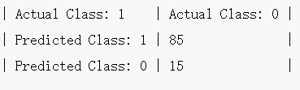

第 51 题
你正在研究一个垃圾邮件分类系统，准备使用正则化的逻辑回归。“垃圾邮件”是正类（y=1），“非垃圾邮件”是负类（y=0）。您已经训练了分类器，交叉验证集中有m=1000个示例。预测类与实际类的图表为：

供参考： 准确度Accuracy=（真阳性+真阴性）/（总示例） 精度Precision =（真阳性）/（真阳性+假阳性） 召回Recall=（真阳性）/（真阳性+假阴性） F1分数=（2*精确*召回）/（精确+召回）分类器的召回是多少？查看计算步骤与答案
- 找到「实际正类」所在的列。预测为正类的 85 条是真阳性，预测为负类的 15 条是假阴性。
- 实际正类共有 85+15=100 条。代入召回率公式：85÷100=0.85，即 85%。
- 实际负类的格子在原图中留空。召回率只用实际正类的数据，因此现有信息足够。